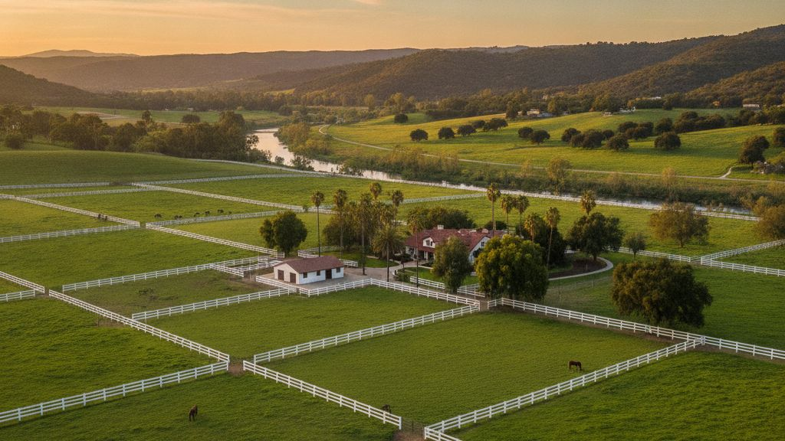

Fallbrook92028Fallbrook is an unincorporated community in the avocado and citrus country of northern San Diego County, with a small downtown and wide stretches of agricultural and horse property.Bonsall92003Strung along Highway 76 where the San Luis Rey riverbed widens, Bonsall mixes horse ranches, open rural parcels and a handful of planned subdivisions.Rainbow92028Rainbow is a quiet rural community along the Old Highway 395 corridor, in the hills east of Fallbrook and near the Riverside County line. De Luz92028De Luz is a sparsely settled canyon community in the hills northwest of Fallbrook, adjoining Camp Pendleton and the Santa Margarita River corridor.Pala92059Pala is a rural valley community along Highway 76 that includes the Pala Band of Mission Indians reservation, a casino, and scattered ranch properties.Pauma Valley92061Pauma Valley is an agricultural valley along Highway 76 at the foot of Palomar Mountain, known for citrus and avocado groves and a private country club community.Valley Center92082Valley Center sits inland of Interstate 15 as an unincorporated community where avocado and citrus groves, horse properties and custom homes share the same rural roads.
De Luz92028De Luz is a sparsely settled canyon community in the hills northwest of Fallbrook, adjoining Camp Pendleton and the Santa Margarita River corridor.Pala92059Pala is a rural valley community along Highway 76 that includes the Pala Band of Mission Indians reservation, a casino, and scattered ranch properties.Pauma Valley92061Pauma Valley is an agricultural valley along Highway 76 at the foot of Palomar Mountain, known for citrus and avocado groves and a private country club community.Valley Center92082Valley Center sits inland of Interstate 15 as an unincorporated community where avocado and citrus groves, horse properties and custom homes share the same rural roads.
Rainbow92028Rainbow is a quiet rural community along the Old Highway 395 corridor, in the hills east of Fallbrook and near the Riverside County line.De Luz92028De Luz is a sparsely settled canyon community in the hills northwest of Fallbrook, adjoining Camp Pendleton and the Santa Margarita River corridor.Pala92059Pala is a rural valley community along Highway 76 that includes the Pala Band of Mission Indians reservation, a casino, and scattered ranch properties.Pauma Valley92061Pauma Valley is an agricultural valley along Highway 76 at the foot of Palomar Mountain, known for citrus and avocado groves and a private country club community.Valley Center92082Valley Center sits inland of Interstate 15 as an unincorporated community where avocado and citrus groves, horse properties and custom homes share the same rural roads.Have a property that needs a value?
Send the address and the reason for the appraisal. You will get a firm quote and a schedule before anything is booked.